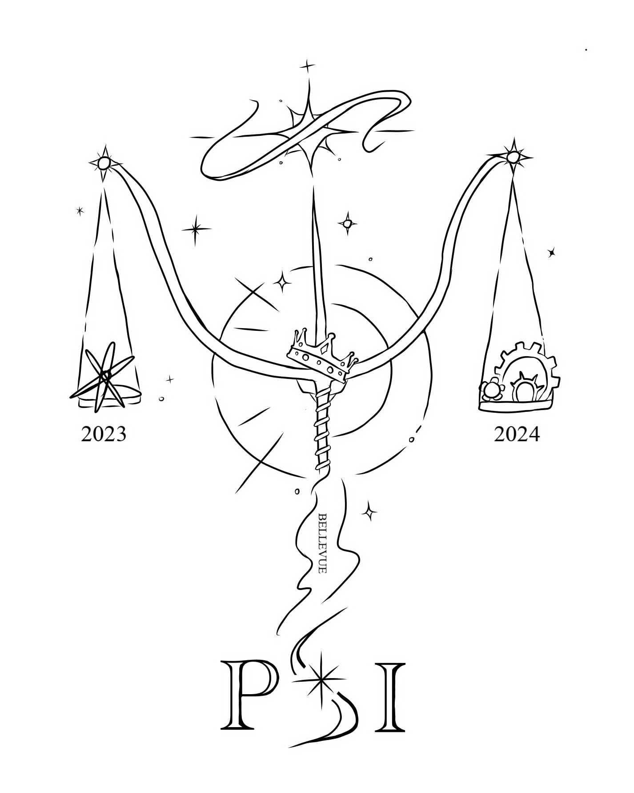

Before Engineering School :
I went to school in Limoges, it was at the Léonard Limosin Highschool that I obtained my general Baccalauréat with distinctions and European Section English mention. During this training, I specialized in mathematics, Physics and Chemistry.
After that, I followed the Classes Préparatoires aux Grandes Ecoles training course at the Bellevue Highschool, in Toulouse in the Physics-Chemistry Engineering Sciences (PCSI) streams in the first year and Physics Engineering Sciences (PSI) in the second year.
This training prepared me to take the Grandes Ecoles d'Ingénieur competitions via wich I was able to join my current establishment,Toulouse INP-ENSEEIHT.
